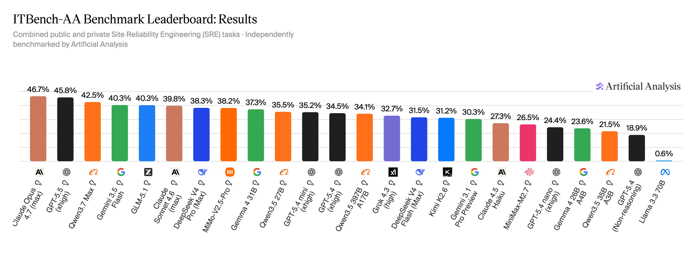

AI Tools — May 2026
What's Available, and What It's Good For
Organized by what you're trying to accomplish — not by brand or category. Every tool listed here has a free tier you can start with today.
Start Here — Conversation & Research
Ask anything. These are the tools most people mean when they say "AI."
ChatGPT
OpenAI · The one everyone's heard of
Fast, multimodal assistant. Handles text, images, audio, code, and files.
The most intuitive interface and the broadest feature set. A great first stop.
Free · $20/mo Plus
Google Gemini
Google · Lives inside your existing tools
Native integration across Gmail, Docs, Sheets, and Calendar.
If your digital life runs on Google, Gemini is the AI you want in your corner — no new
habits required.
Free · Workspace subscription for full integration
Claude
Anthropic · Best for long-form writing and nuanced thinking
Exceptional for writing, reasoning, research, and long documents.
Built with a strong emphasis on honesty and careful responses. The free tier is generous
and highly capable.
Free · $20/mo Pro
Grok
xAI · Real-time information and deep reasoning
Built for users who want more thinking and less fluff. Integrates
with live web search and the X platform. Grok 3 offers strong reasoning for complex analysis.
Free version available

ITBench-AA Benchmark (Artificial Analysis, 2026) — Measures performance on complex, autonomous SRE tasks. Claude Opus 4.7 leads at 46.7%, GPT-4.5 close behind at 45.8%. For everyday use, the differences between top models are subtle. Try them and find your preference.
Create — Images
Turn a description into a photograph, illustration, infographic, or design.
Google ImageFX (Imagen 3)
Google · Fast, photorealistic, excellent free entry point
Strong balance of speed and image quality. Great for marketers and
designers who want photorealistic or stylized visuals without spending time fine-tuning prompts.
Try it free at ImageFX.
Free at ImageFX
ChatGPT 4o Images
OpenAI · Image generation built into your conversations
If you already use ChatGPT, image generation is built in. Context-aware
visuals with just a few clicks — great for social media graphics, presentations, and mockups.
Included with ChatGPT Plus
Adobe Firefly
Adobe · Commercial-safe images inside Creative Cloud
Deep integration with Photoshop and Illustrator. All generated images
are safe for commercial use. The choice for design professionals and agencies who need
AI output they can legally publish.
Included with Creative Cloud

Keep this formula handy: Subject + Style/Medium + Composition + Lighting/Mood + Key Details + Constraints. The full prompt library below has 47 ready-to-use examples.
Create — Video & Voice
Generate video clips, voiceovers, and AI-produced music.
OpenAI Sora
OpenAI · Short AI-generated video clips
Generates short video and image clips from prompts. Built directly
into ChatGPT Plus. Excellent for B-roll, social content, and creative projects.
Included with ChatGPT Plus
Descript
Podcasters, video editors, content creators
Edit audio and video the way you'd edit a text document. AI features
include filler-word removal and voice cloning. A significant time-saver for anyone
producing regular content.
Free · 3 hrs transcription
ElevenLabs
Creators needing professional voiceovers
Ultra-realistic AI voice generation with cloning, multilingual
dubbing, and emotional control. A full creative suite for podcast-quality narration
without hiring voice talent.
Free tier available
Suno AI
Anyone who wants to create music from a text prompt
Full songs — vocals, instruments, structure — from a single
description. Whether you need background music for a video or want to write an original
song, Suno makes it accessible.
Free tier available
Organize — Meetings & Notes
Never lose what was said in a meeting again.
Fireflies.ai
Teams with regular meetings
Joins calls, records, transcribes, and turns conversations into
searchable summaries with action items. Supports 100+ languages. Free tier includes
unlimited transcription.
Free tier · unlimited transcription
Jamie
Founders, managers, and anyone who leads meetings
Captures meetings quietly without bots or browser extensions.
Instant, structured summaries with tasks and key takeaways. Privacy-focused and
remarkably accurate.
Free · 10 meetings/month
Notion AI
Notion users who want AI built into their workspace
AI assistance — writing, summarizing, task generation, database
queries — directly inside your Notion workspace. Connects to GPT-4 and Claude without
separate subscriptions.
Free trial in all accounts
Write & Polish
From quick grammar fixes to long-form creative collaboration.
Grammarly
Anyone who writes and publishes content regularly
Grammar, tone, rewriting, and AI/human authorship checks inside
your favorite apps. The free tier includes 100 AI prompts/month and a browser extension
that works almost everywhere.
Free · 100 prompts/month
Claude
Writers who want a long-form collaborator
Claude excels at brainstorming, outlining, rewriting, and matching
your voice. Use it for research, drafting sermons, writing letters, or polishing anything
that needs to sound like you.
Free · full writing features
Canva
Visual content without design experience
Drag-and-drop design with AI features including Magic Edit, background
removal, and Magic Expand. Fast, polished graphics for social media, presentations,
flyers, and more.
Free · Pro $12.99/mo
Automate & Connect
Connect your apps and build workflows without writing code.
Zapier
Non-technical teams who want automation without a developer
Connects 8,000+ apps using triggers and workflows. "When this
happens in App A, do this in App B." Now includes AI agents that can take real actions
across your entire software stack.
Free · 100 tasks/month
Make
Teams who need more control than Zapier, without the price
Visual canvas automation with branching logic and AI agents built in.
More powerful than Zapier, more affordable at scale. Free plan includes 1,000
operations/month.
Free · 1,000 ops/month